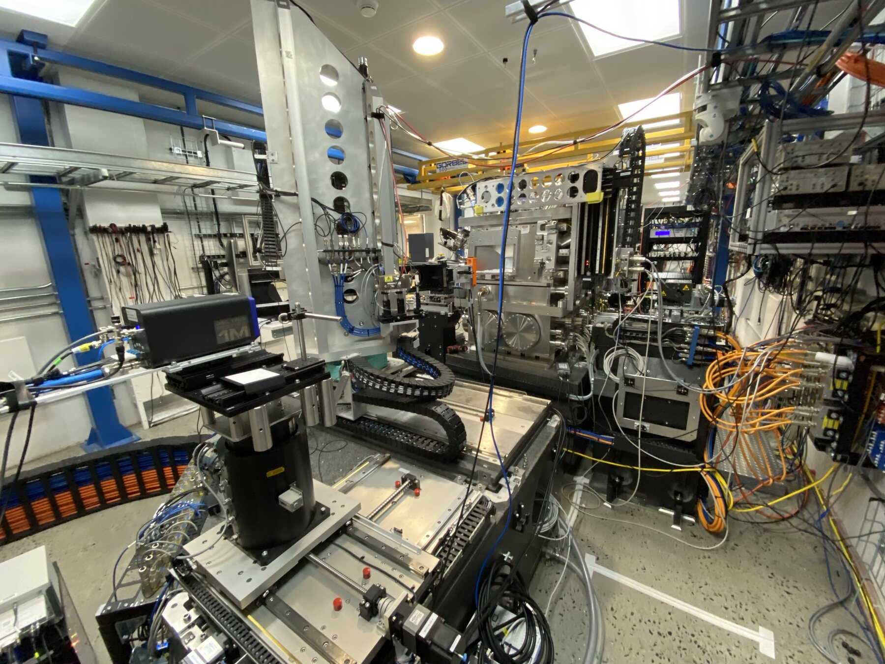
Brookhaven National Laboratory · NSLS II
Key Skills
The Hard X-Ray Nanoprobe (HXN) beamline at NSLS II images materials, including microchip features, at roughly 7 nm resolution, about 1/10,000th the width of a human hair. Between experimental runs, the beam needs to be attenuated or blocked, and the existing process required someone to physically enter the hutch to place filters by hand. I designed, built, and installed an automated multi-state shutter to remove that manual step.
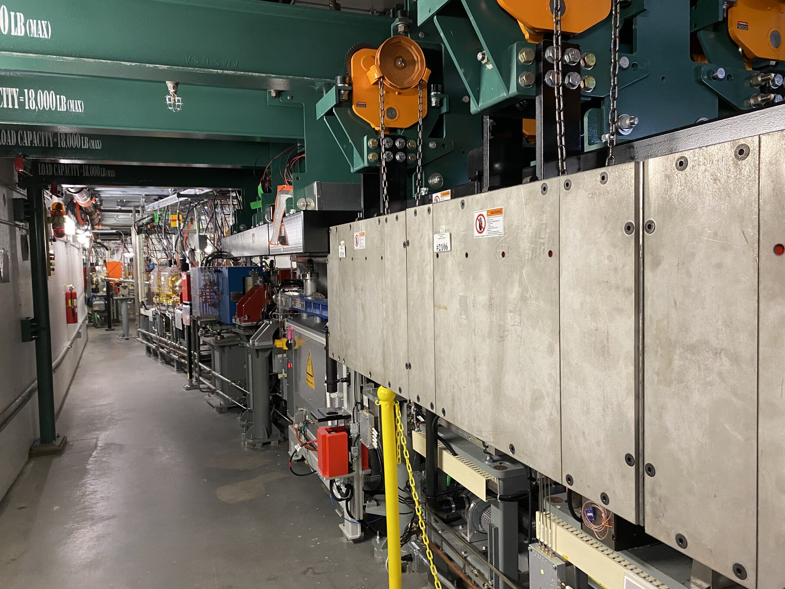
Manual shutter placement meant every attenuation change cost real beamtime, a scarce, scheduled resource at a national lab. I worked directly with beamline scientists to translate that problem into hard requirements before designing anything:
Pneumatic actuation, using single-acting air cylinders with solenoid valve control, gave a failsafe return to open on air or power loss and integrated cleanly with the beamline's existing pneumatic infrastructure. PTFE slider bearings on an aluminum rail keep the mechanism jam-resistant, and a clear acrylic housing lets anyone see what's happening inside without disassembly, which matters for a system that has to keep working when you're not in the room.
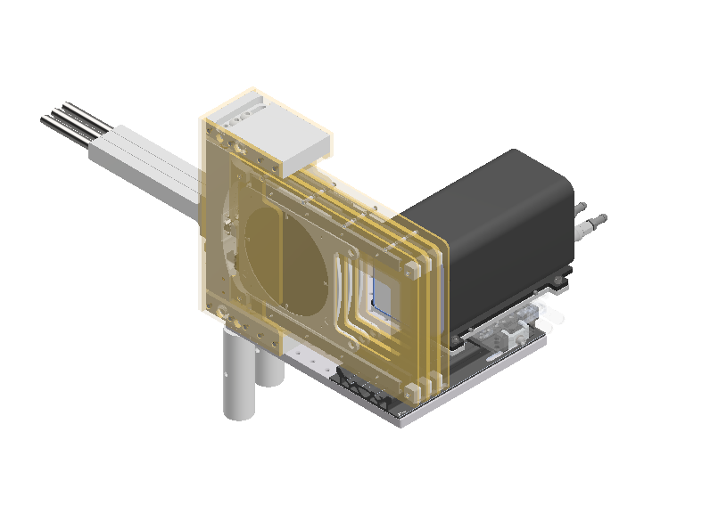
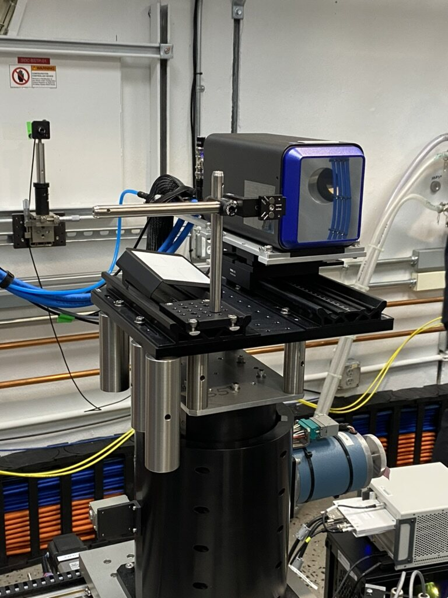
Each module is self-contained, with its own air cylinder, limit switch, and sample tray, so failures stay isolated and modules can be swapped independently. A carriage with press-fit magnets lets an operator swap attenuator trays in under 15 seconds, and the whole module mounts via a quick-release clamp for a sub-2-minute swap.
The mount is one of the only machined aluminum parts in an otherwise 3D-printed and laser-cut build.
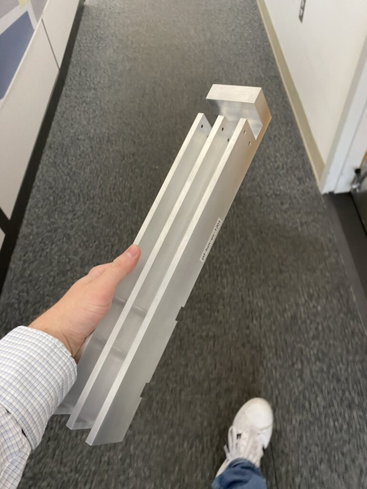
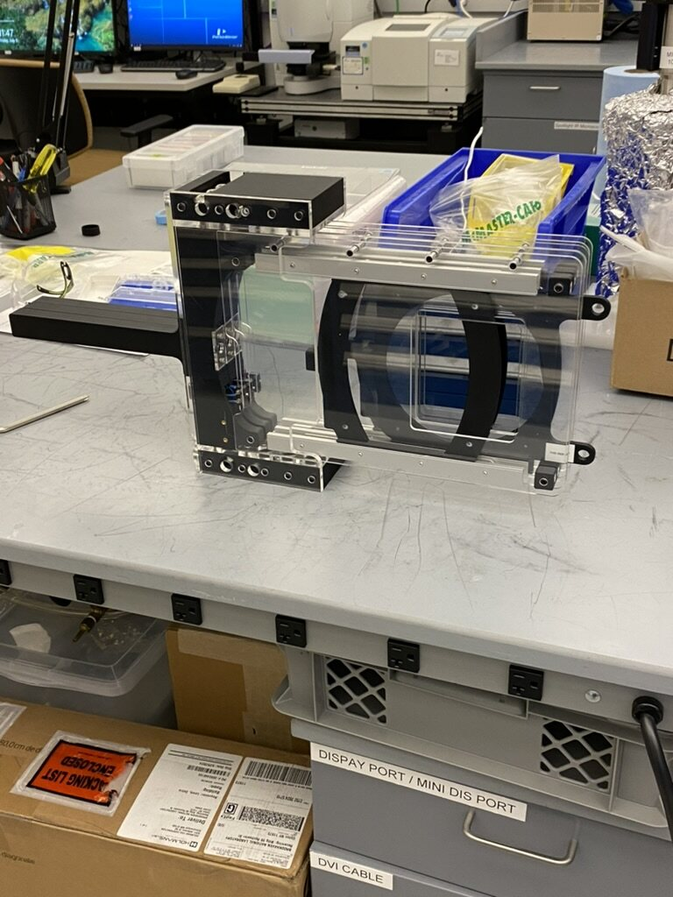
Solenoid valves, air on/off control, and limit switch feedthroughs are all consolidated on a single wall-mounted acrylic manifold plate, so maintenance means looking in one place instead of tracing individual lines back to their source.
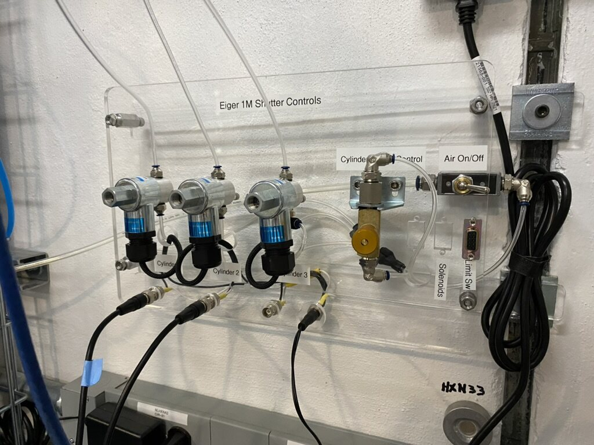
I interfaced the shutter with the beamline's existing relay box rather than building new control infrastructure, and coordinated the wiring handoff with the lab's controls technician so it would run on the existing operator GUI with no new software to maintain.
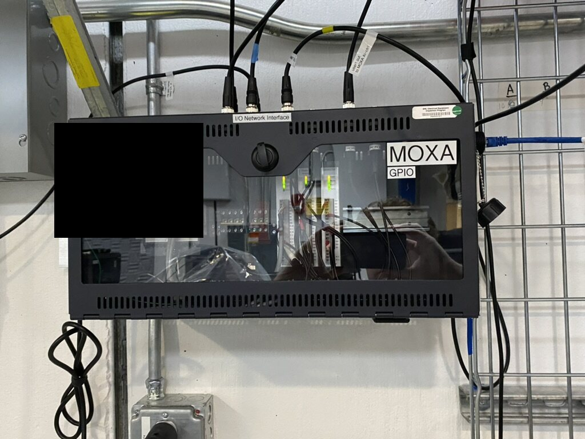
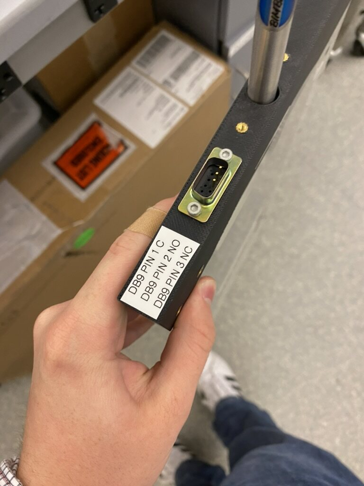
I bench-tested the full pneumatic and controls loop before taking it into the hutch, to catch problems on the bench instead of at the beamline.
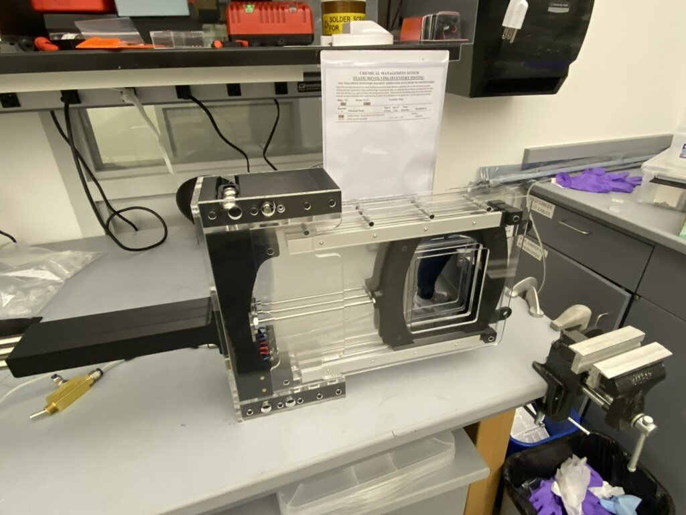
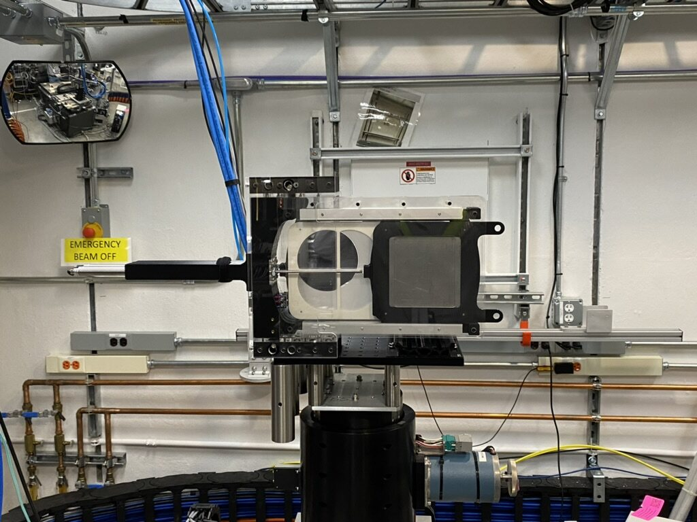
The shutter went into service before my internship ended and has been operating on the beamline since August 2024. Here it is in operation:
Fully operational before internship end. In active, unattended use on the beamline since August 2024 with no major issues.